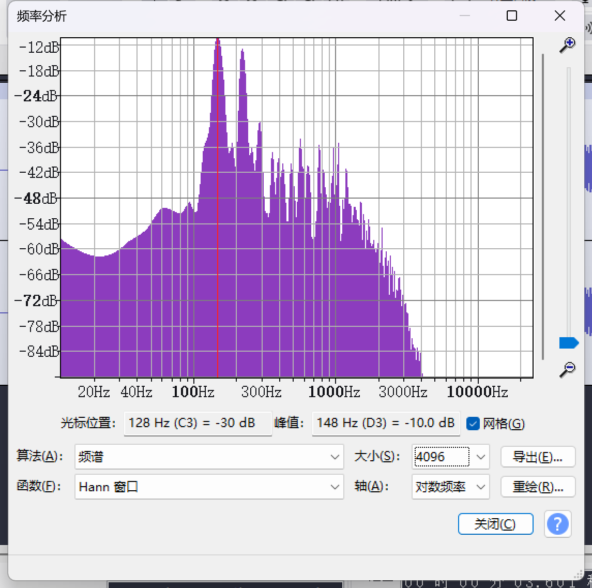
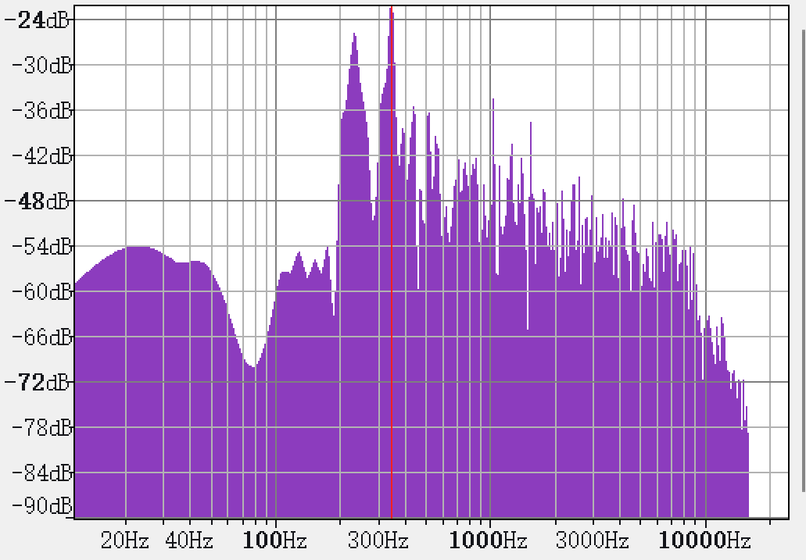
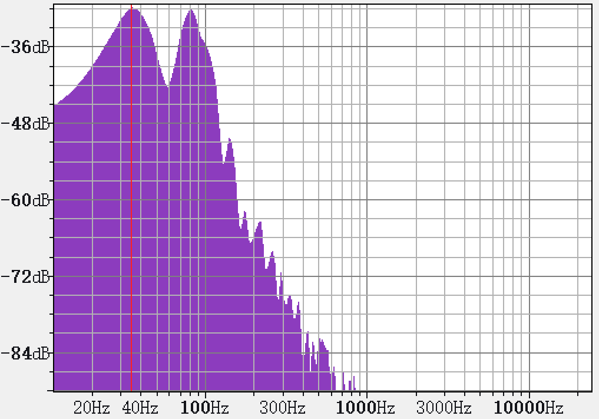

2025-05-17
注：音数大作业为小组完成的项目，此处仅将个人所负责的部分（定音鼓有稳定持续的音高的原因）记载于此. 该课程论文的文件详见文末的附件.
定音鼓发声机理
同心模态和径向模态
如上所述，鼓的振动模态拆分为径向模态（Diametric Modes）和同心模态（Concentric Modes）的组合，即由 \(n,k\) 所决定。下面分别研究同心模态和镜像模态。
首先是同心模态。一个简单但又重要的事实是，鼓手在敲击定音鼓的时候并非在中心敲击，而是在位于距离边缘到中心的约 1/4 的地方敲击，所以同心模态的影响较小。但是同心模态就算因为错误的击打而产生了较大的初始能量，之后也会快速衰减，不会对固定音高产生影响。
在 Thomas D Rossing 的 Science Of Percussion Instruments[1]（Chapter 2 Drums with Definite Pitch，2.3 Timpani）中，记载了有关不同模态在击打后 \(0.03s\) 以及 \(1s\) 不同振动模态的振幅。我们观察到，正常击打的时候，同心模态振动的能量很小，几乎可以忽略。而若在正中央击打，则同心模态在击打后 \(0.03s\) 能量较大，但是 \(1s\) 后能量快速衰减，得到的结果与正常击打时的结果更加相似。而相比之下，径向模态（\(n=1,k\ge 1\) 的模态）的能量衰减明显少于同心模态。
然后我们关注一个未被讨论的特例，即 \(n=1\)，\(k=0\) 的振动模态。这个振动模态中，整个鼓皮一起上下振动。这个模态和同心模态类似，也因为鼓手敲击位置以及空气负载的减震，导致了衰减速度变快，并不会对定音鼓的固定音高产生影响。不论是人耳听到的声音，还是通过频率分析得到的结果，这个振动模态几乎都会被忽略。
通过这个分析，我们知道了对于定音鼓来说，真正影响其固定音高的是径向模态，即 \((1,1)\)，\((2,1)\)，\(\dots\)，\((k,1)\)。
空气负载
定音鼓相比于普通的鼓，其最大特点是有固定音高。而使得定音鼓有固定音高的主要物理现象是空气负载（Air Loading）。
由于定音鼓的膜的面积较大，所以在鼓手敲击定音鼓的时候，鼓内外的空气会对鼓皮的震动产生不可忽略的影响。
一方面，当膜产生振动的时候，膜表面的运动使得相邻空间的空气产生了加速度。而由于惯性的影响，这个加速度会阻碍膜的振动。换句话说，振动时的发生变化的物体的质量不仅要考虑膜，还要考虑膜附近的空气，于是该振动系统可以理解成一个增加了空气质量的复合系统。由于系统的质量增加，所以所以空气负荷使得振动频率下降。这个振动的影响对于不同模态是不一样的，对 \((1,1)\) 和 \((2,1)\) 的影响尤为强烈。
与前面得到的理想情况不同的是，空气负载的影响依赖于膜的各种参数。这就是定音鼓与其他鼓的一大区别：定义鼓的膜的参数使得在算上空气负载后，径向模态的频率比接近于 \(1:1.5:2:\dots\)。
【Without Kettle 的仿真实验报告】
这个数据距离真实的 \(1:1.5:2\) 仍有差距，因为我们忽略了定音鼓的 Kettle 的影响。但是已经足够好，没有鼓壳的定音鼓在历史上也被申请过专利[2]。
有了 Kettle 后，鼓内封闭的内部空气体积的振动模式的频率高于与其耦合的膜模式的频率[3]，这对膜的振动产生影响。经实验得到，\(n=0\) 的模态频率上升，而其余模态频率下降。
【With Kettle 的仿真实验报告报告】
经过这样的变化后，径向模态的频率达到了 \(1:1.51:2.01\)，更加接近 \(1:1.5:2\).
另一方面，空气分子的运动产生速度梯度，空气的黏性导致振动的能量转化为热能，导致振动系统的能量快速衰减。对于频率越高的模态，空气黏性导致的衰减越显著。相关实验表明 \((1,1)\)，\((2,1)\)，\((3,1)\) 在 \(1s\) 之后变化不大，但是 \((4,1)\) 和 \((5,1)\) 则在 \(1s\) 后快速衰减[4]。所以前三个径向模态的和谐足以产生一个固定音高。
值得注意的一点是，理论上存在 Missing Fundamental 的现象，即在听到其泛音列时，人耳会自动听到其 Fundamental，即弥补出 Fundamental 的缺失。而由于 \(f_{1,1}:f_{2,1}:f_{3,1}=1:1.5:2\)（后续将展示为何是这样的比例），所以根据这个理论，人耳将听出比 \(f_{1,1}\) 低八度的音。但是实际上，更加高频的模态衰减速度过快且能量较小，所以不支持产生这样的现象。
最后所以最终定音鼓产生的固定音高即为 \((1,1)\) 振动模态所对应的频率。
[1] Rossing, Thomas D. "Science of Percussion Instruments", 2000, ISBN 981-02-4158-5
[2] Montagu, Jeremy. Timpani and Percussion. Yale University Press. May 2002
[3] Rossing, Thomas D. “The physics of kettledrums.” Scientific American 247/16 (November 1982): 172-178.
[4] Acoustic Analysis of Timpani: Specific Mode by Striking Point，Yuya Nishimura & Sohei Nishimura，https://www.ijeert.ijrsset.org/pdf/v3-i10/7.pdf
有/无固定音高乐器本质区别
定音鼓和其他鼓的对比
我们下载了一段定音鼓的声音[5]，并对其中一个衰减过后的音进行频率分析，得到了如下的结果：


最高的峰波为 \(-10dB\)，而 \(>-30dB\) 的波峰在 148Hz（D3），220Hz（A3），290Hz（D4），比例为 \(1:1.48:1.95\)，而其余的波峰都显著低于这三个波峰。考虑到录音等造成的误差，这是一个相当令人满意且符合前面得到的结论的结果。
我们也下载了一段军鼓的声音[6]，并对其中一个衰减过后的音进行频率分析，得到了如下的结果：


最高的峰波为 \(-20Hz\)，而其中 \(\ge -36dB\) 的峰波就有：231Hz（A#3），345Hz（F4），439Hz（A4），512Hz（C5），1018Hz（C6）。许多模态的能量仍然较高，无法形成一个和谐的泛音列。
我们还下载了一段底鼓的声音[7]，并对其中一个衰减过后的音进行频率分析，得到了如下的结果：


容易发现能量较大的几个峰波在 35Hz，80Hz，140Hz。剩下的模态衰减后能量确实很小，但是 \(1:2.3:4\) 的比例也无法形成和谐的泛音列。
对比以上三个结果，这一方面证实了上面所说，定音鼓能够产生固定音高，一方面得益于非径向模态的快速衰减，一方面得益于空气负载产生的频率改变。
另一方面，能量较高的模态是否产生比例和谐的泛音列则是能否产生固定音高的关键。
有/无固定音高的乐器的区别
从上面，我们可以发现有音高的乐器的最重要特点是其泛音列频率为某个基频的整数倍。注意这里基频不一定真实在频谱上可被观测到（例如定音鼓，以及 Missing Fundamental 现象）。
这里本质上是因为将所有振动模态叠加之后，由于泛音列的频率为基频的整数倍，所以其振动大致上满足了一种以基频为周期的周期性。这种周期性让我们能够感知到其音高。
而对于无音高乐器，例如军鼓，其振动模态非常多，较为混乱，无法形成一个固定周期；例如底鼓，其 \(1:2.3\) 的频率比并非整数倍数关系，人耳也就无法形成一个可感知的基频。
综上所述，音高本质上是人耳对形成固定周期的基频的感知，而乐器是否有固定音高本质上是其所有振动模态叠加起来是否能够产生一个固定的周期。
[5] What does the timpani sound like? (Scale) @UtahSymphonyUtahOpera https://www.youtube.com/watch?v=3tx_Oi86esk
[6] Snare Drum Samples @TheDrumwerks https://www.youtube.com/watch?v=ljDcWTFpVME
[7] KICK DRUM SOUND EFFECT [HD] @nBeatsofficial https://www.youtube.com/watch?v=qAn1zfzrvkk
课程论文：链接，由小组共同完成.